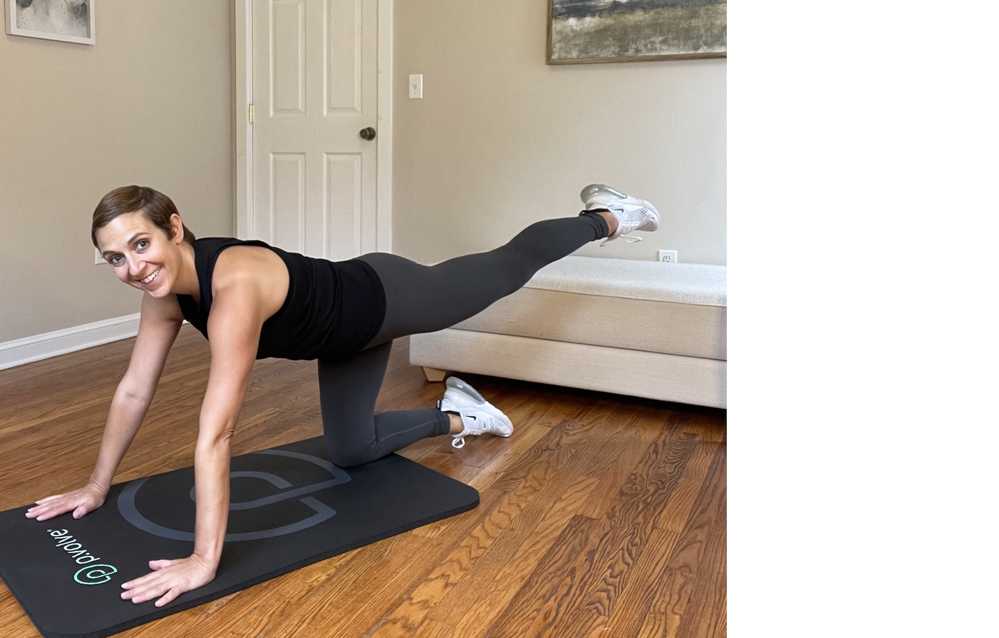
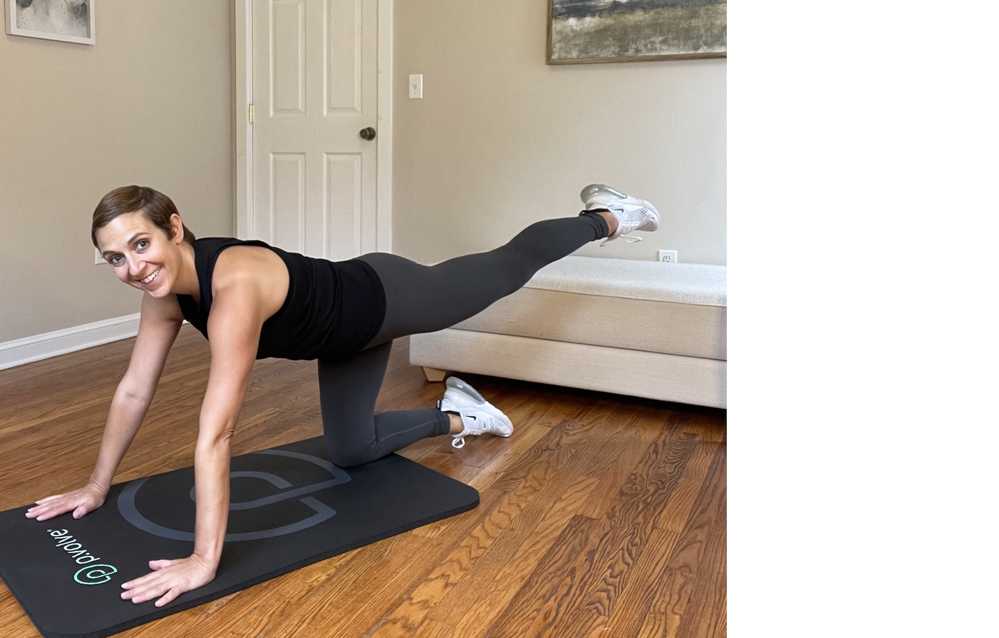

Whether you were a workout fanatic pre-pregnancy or didn't exercise at all, you may be wondering if exercise is even safe during pregnancy and what movements you can and cannot do. Between conflicting advice from family and friends and influencers touting unsafe prenatal exercise practices online, it can be difficult to sort past the prenatal exercise misinformation and find evidence-based guidelines. That's why fitness experts in the Good Housekeeping Institute Wellness Lab sat down with P.volve's Clinical Advisory Board to answer all of your questions on safe prenatal workouts, as well as the best pregnancy exercises by trimester.
From reducing back pain to promoting healthy weight gain during pregnancy, the benefits of prenatal exercise are vast. "Studies have shown that women who exercise during pregnancy are more likely to have an uncomplicated vaginal delivery and a quicker recovery post delivery," says Dr. Suman Tewari, OBGYN, Clinical Advisory Board Member at P.volve.
Regular exercise during pregnancy can strengthen your heart and blood vessels and ease constipation (a pesky pregnancy symptom). Exercise is also important in the postpartum period, as it can help improve mood and decrease the risk of developing deep vein thrombosis.
Not only is movement great for you, but it's incredible for your baby as well. "Women who exercised during pregnancy showed a lower incidence of complications such as excessive gestational weight gain, gestational diabetes, gestational hypertension, preeclampsia, preterm birth, lower birth weight, cesarean birth and operative vaginal delivery," Doctors shares.
Doctors says it is safe and highly recommended that women with uncomplicated pregnancies exercise throughout their pregnancy. "Exercise is essential for optimal health – both for your mind and your body – and living a vibrant life."
"General guidelines advise that women who were engaged in vigorous physical activity prior to pregnancy can continue these activities during pregnancy and the postpartum period," Doctors says, but don't be surprised if you have to tone down the intensity of your workouts as you adapt to the many changes happening in your body. Doctors adds that it's perfectly safe to exercise up until the end of your pregnancy, but that it's important to consult with your obstetric provider who may recommend modifications to your exercise routine.
Although it's ideal to be exercising before getting pregnant, many women are motivated to establish healthy habits during pregnancy and start a workout regimen which is great. "If you have a standard pregnancy, you can start exercising anytime; start with a mild intensity exercise routine and then gradually increase the intensity,Doctors says, stressing that it's important to listen to your body and always consult with your obstetric provider. "Our bodies are meant to be moving every day, pregnant or not."
There are certain situations where pregnant women should not exercise until they have been further evaluated by their obstetrician, doctors advises. Those include symptoms like vaginal bleeding, abdominal or pelvic pain, amniotic leakage of fluid per vagina, dizziness, headache, chest pain, calf pain or swelling, muscle weakness affecting balance, labor pains and regular contractions.
"The current recommendation for pregnant and postpartum women is at least 150 minutes of moderate intensity aerobic activity per week," Dr. Tewari explains. You can divide the 150 minutes into 30-minute bouts of exercise five days a week or smaller 10-minute workouts throughout each day. But don't feel discouraged if you can't hit the full 150 minutes per week; any activity and movement is better than none, especially during pregnancy.
As your baby and belly grows, among the many other changes of pregnancy, some modifications will be necessary. Joints become relaxed, the extra weight in the front of your body shifts your center of gravity and breathing can also become difficult as your need for oxygen during pregnancy decreases. "Each person and pregnancy are different, so the rule of thumb is to always listen to your body and let it be the guide," says Antonietta Vicario, Integrative Health Coach, VP of Talent and Training at P.volve. Here are some main exercise modifications to keep in mind as your pregnancy progresses:
You may have heard about the importance of pelvic floor health during and after pregnancy. "The pelvic floor is a group of skeletal muscles at the base of the pelvis, that forms a bowl-shaped structure connecting our sit bones, our tailbone, and our pubic bone. In other words, it covers the entire bottom of our pelvis," explains Dr. Amy Hoover, Doctor of Physical Therapy, Clinical Advisory Board Member at P.volve. The pelvic floor is also a vital part of core musculature Dr. Hoover shares, working with the diaphragm, abdominal and back muscles to help control the pressure system in the body as you move and function throughout your day.
strengthening the pelvic floor during pregnancy is important as the demand of core stability increases as your baby grows and your joints become slightly more lax. "The mechanics of how we move change rapidly during pregnancy due to increased weight and stretching of the abdominal wall, as well as changes in our center of gravity" says Dr. Hoover. "Strengthening the pelvic floor during pregnancy may also help reduce the risk for urinary incontinence and pelvic organ prolapse both during pregnancy and postpartum." Since the pelvic floor muscles are stretched to several times their resting length during vaginal delivery, the more strength you can build during pregnancy means a better recovery after delivery.
The best pregnancy exercises focus on hip and core strength, as well as balance and pelvic floor strengthening. Vicario recommends the following exercises by trimester to help keep you strong and active during all phases of your pregnancy.
Stand with feet wide, knees soft, eyes closed and hands on belly. Take deep breaths into the belly allowing it to expand and contract fully. As you exhale, think of stopping the flow of urine, contracting vaginally, rectally, and feeling how the tailbone naturally flexes without adding any movement there. As you exhale and contract the pelvic floor, add pulling the abdominals in and up as if you were riding an elevator from the basement to the top floor of a building. All of these sensations account for a properly executed Kegel.
Stand tall with feet, knees, and thighs together and turn your palms forward. Hinge back at your hips into a p.sit, keeping knees over ankles and spine long and straight to stretch the glutes while sweeping the arms overhead. Drive up through the floor, pressing your feet down to come back to stand with the arms by your side. Add the pelvic floor contraction as you stand back up.
Tap one toe straight forward, angling your hip bones up toward the ceiling and squeezing into your glutes while leaning back. Be sure to keep your ribcage hugged together in the front so you don’t sink into the lower back. Reach your arms overhead with palms facing forward. Lift your front leg up while pressing your arms down, recruiting your abdominals as you do in your everyday life and working on stability. If needed, feel free to hold onto the back of a chair.
Step one foot back as if you are mid-step and lower your back heel down. Front knee is slightly bent. Start to open and close your hips, rotating your pelvis while keeping your feet pointing straight forward to get some movement in the hips. For an added challenge for the upper body, grab onto light weights and pull one elbow back at a time, moving the arms as you twist your hips.
Start on all fours stacked with a neutral spine, hands in line with shoulders and hips over knees. Keep your abdominals lifting to the ceiling so your back stays neutral, feeling the sensation of hugging your baby in. Bend one knee up to the ceiling, pressing through a flexed foot and return to start position, pumping through the glutes.
Step one foot back as if you are mid-step and lower your back heel down, leaning your body forward to create one long diagonal line through the crown of your head and down through the back heel, arms reaching back behind you. Keeping your back leg straight, lift the heel high, squeeze the back glute and push through the ball of the foot to engage your glutes while reaching your arms overhead. Feel a huge stretch on the hip flexor which tends to get very tight from pregnancy. From there, return to start position.
Holding onto light hand weights or water bottles, sit your hips back into a p.sit, hinging at your hips with both knees deeply bent and weights reaching on a low diagonal. Keeping your knees in line, bring one foot back behind you pressing through the ball of the foot. Drive up through both feet to come to full hip extension and squeeze your weights in by your ribs, engaging the glutes and postural muscles.

From your stagger position, keep your standing foot forward and pivot your hips and torso toward your front leg, rotating on a 45-degree angle out to the side. Extend the weights in this internal stagger position. Come back to center, rowing your arms back.
 

Start on all fours with a neutral spine, hands in line with shoulders and hips over knees. Keep your abdominals lifting to the ceiling so your back stays neutral. Extend one leg straight back behind you, tapping your toes to the floor. Lift and lower the leg while keeping your baby hugged into your spine, pumping through the glutes.